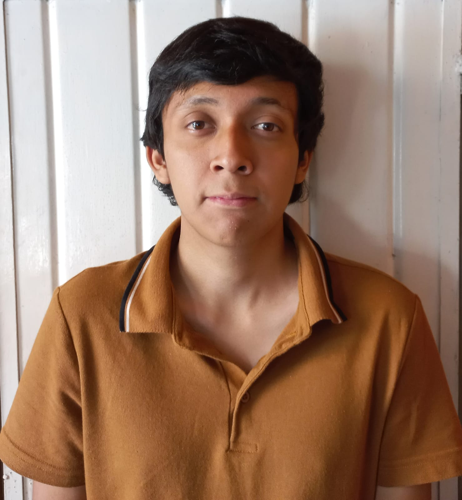

Uriel Leal Montero

Ubicación
Datos Personales
- Nombre completo: Uriel Leal Montero
- Fecha de nacimiento: 31/08/2005
- Lugar de nacimiento: Camerino Z. Mendoza, Veracruz
- Edad: 20 años
- Correo: l23011290@orizaba.tecnm.mx
- Teléfono: 272 154 72 18
Formación Académica
- 2011-2013: Escuela Primaria Niños Héroes
- 2013-2017: Escuela Primaria Guillermo Martínez
- 2017-2020: Escuela Secundaria Ignacio Manuel Altamirano
- 2020-2023: Escuela de Bachilleres América
- 2023-2027: Tecnológico Nacional de México - Instituto Tecnológico de Orizaba
Experiencia Laboral
- 2020-2026: Tienda de comercial abarrotes Luz
Video de Presentación
Regresar al Inicio